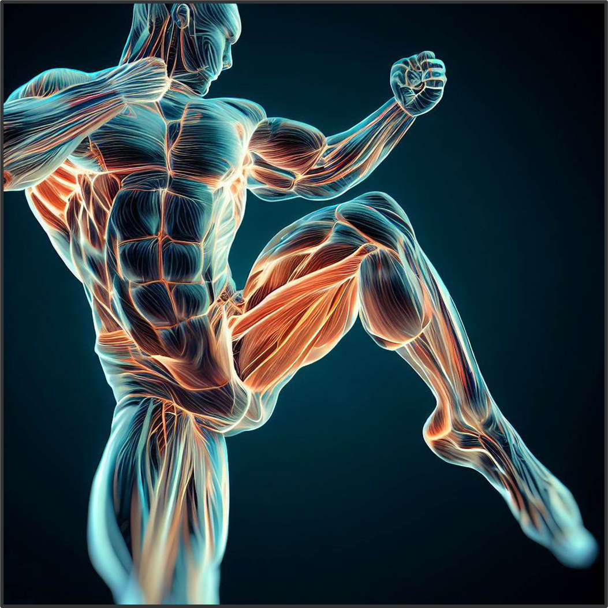

I Muscoli
L'insieme dei muscoli del corpo umano prende il nome di apparato muscolare. I muscoli rendono possibili i movimenti e permettono anche di compiere gesti che esprimono emozioni e sensazioni, come per esempio piangere, ridere o sbadigliare.
Nel corpo umano ci sono più di 650 muscoli, che corrispondono circa alla metà del suo peso complessivo.
I muscoli a seconda del compito che svolgono hanno una particolare forma:
- fusiformi come quelli delle gambe e delle braccia;
- muscoli piatti come quelli della fronte e dell'addome;
- orbicolari che sono quelli degli occhi e delle labbra.
